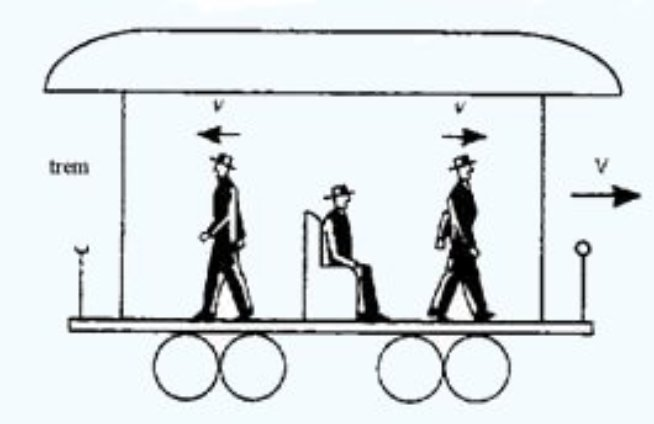

Um referencial (ou sistema de referência) em física é um ponto, objeto ou sistema de coordenadas escolhido para observar, descrever e medir grandezas físicas, como a posição, a velocidade, a aceleração e a trajetória de um corpo.
Na física, o movimento é sempre relativo. Isso significa que um objeto não está simplesmente "em movimento" ou "em repouso" por si só; ele sempre estará em movimento ou em repouso em relação a alguma coisa.
O conceito é amplamente estudado na Cinemática e possui os seguintes princípios fundamentais:
Movimento: Ocorre quando a posição de um corpo muda em relação ao referencial adotado ao longo do tempo.
Repouso: Ocorre quando a posição de um corpo não se altera em relação ao referencial escolhido com o passar do tempo.
Trajetória: É a linha descrita pelas sucessivas posições ocupadas por um corpo em movimento; a forma da trajetória muda conforme o referencial.
Relatividade do movimento: Um mesmo corpo pode estar em repouso para um referencial e em movimento para outro (por exemplo, um passageiro sentado em um trem em movimento está em repouso em relação ao vagão, mas em movimento em relação a uma árvore na calçada).
Referencial Inercial: É aquele em que a 1ª Lei de Newton (Lei da Inércia) é válida. Está parado ou em movimento retilíneo uniforme (velocidade constante e sem rotação).
Referencial Não Inercial: É aquele que possui aceleração ou movimento circular, exigindo forças fictícias para explicar os fenômenos observados dentro dele.